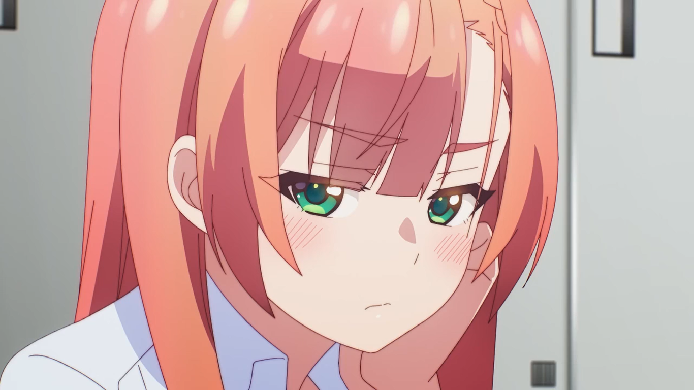

Yumemiru Danshi wa Genjitsushugisha
Manga Yumemiru Danshi wa Genjitsushugisha yang dibuat oleh komikus bernama Okemaru ini bercerita tentang Wataru Sajou, anak laki-laki yang sangat mencintai teman sekelasnya yang cantik Aika Natsukawa, terus-menerus mendekatinya tanpa henti sambil bermimpi tentang mereka saling mencintai. Namun, suatu ketika, dia terbangun dari mimpinya tersebut dan berpikir “Aku sama sekali tidak pantas untuk orang yang sebaik dirinya”. Menyadari hal ini, Wataru mulai menjaga jarak yang sewajarnya terhadap Aika. Aika pun sontak terkejut dan berpikir, “Apa sekarang dia membenciku?” Apakah niatnya sirna karena dia teburu-buru mengambil kesimpulan yang salah!? Ini adalah awal dari kisah komedi romantis yang berpusatkan pada dua orang yang tidak bisa menyampaikan perasaannya satu sama lain dan berpikir kalau cinta mereka bertepuk sebelah tangan.